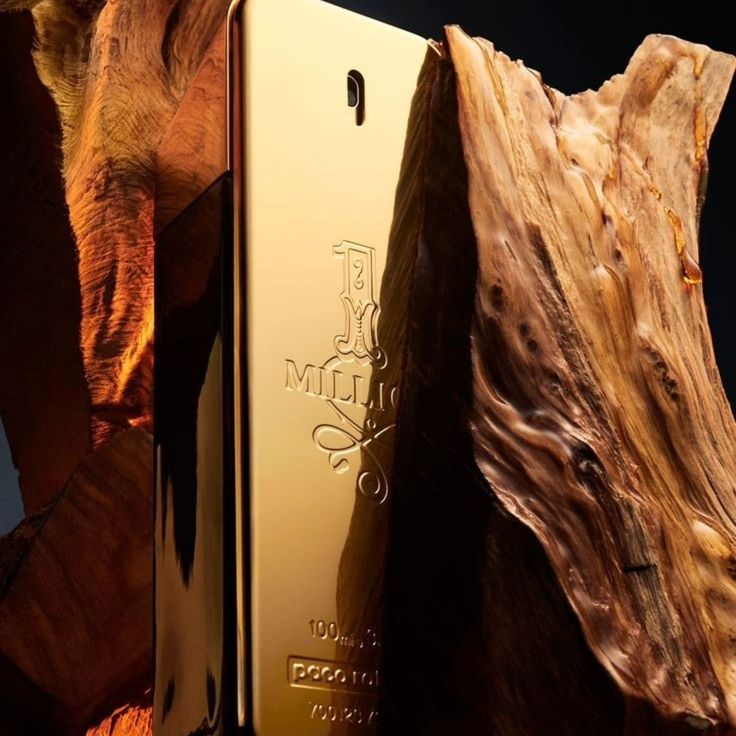
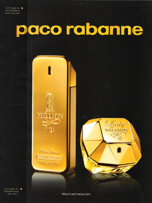

Processo de fabricação
A fabricação envolve a seleção e combinação de matérias-primas aromáticas, processos de mistura e maturação da fragrância e o envase em frascos preparados para manter qualidade e estabilidade do perfume.

O One Million foi lançado pela Rabanne em 2008 com a proposta de representar luxo, confiança e destaque. Seu conceito foi inspirado em elementos sofisticados e no visual marcante do frasco dourado.

A marca Rabanne surgiu na França e ficou conhecida por unir moda e perfumaria. O One Million foi desenvolvido como uma fragrância masculina de alcance mundial e rapidamente se tornou um dos perfumes mais reconhecidos da marca.
A fabricação envolve a seleção e combinação de matérias-primas aromáticas, processos de mistura e maturação da fragrância e o envase em frascos preparados para manter qualidade e estabilidade do perfume.